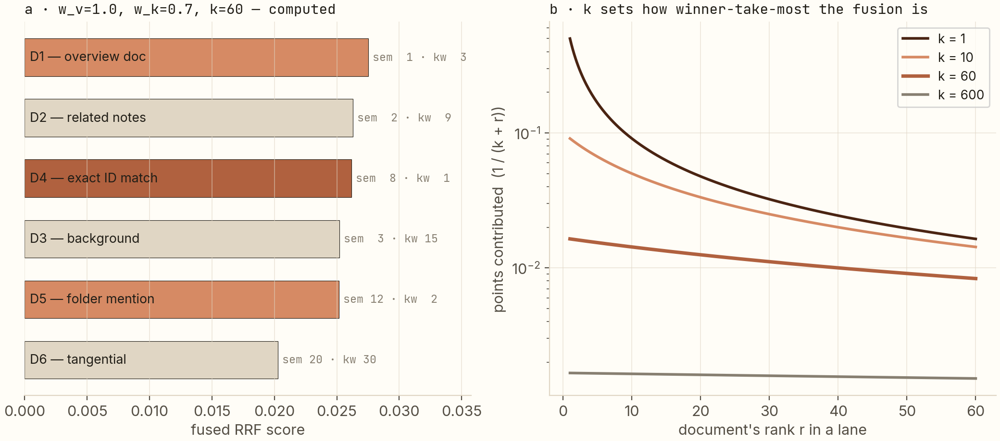

Three retrieval lanes, one formula to fuse them.
ipic's search box doesn't know what kind of query is coming — a meaning, an exact identifier, or a half-remembered filename. So it runs three retrievers at once and fuses their rankings with one line of math. This post derives that line, demonstrates it on a computed example, and shows why the same design shows up in production RAG systems.
Every retrieval signal fails differently: semantic search misses exact strings it has never seen, keyword search misses meaning phrased differently, filename search is trivial but sparse. Instead of picking, ipic runs all three and fuses their rankings — not their scores — with weighted reciprocal rank fusion: score(d) = Σ wlane / (k + rank). The formula is one line, derived here from four requirements, and the computed example shows the payoff: a document the semantic lane buried at rank 8 rises to fused rank 3 because it was the keyword lane's #1.
What this post is about
Search feels like one problem but is at least three. Consider looking for things on your own disk:
- "the lecture where she explains radiation shielding" — a meaning. No keyword matches; you need semantic search: text converted to vectors, query converted to a vector, nearest neighbors.
- "q3_roadmap_final_v2" — an exact string. Semantic vectors are fuzzy precisely where you need zero fuzz; keyword search nails it.
- "that invoice… something with may" — a filename fragment. The file's name is the signal; its content is irrelevant.
No single retriever wins all three races. The engineering question is: when three retrievers each return a ranking of the same documents, how do you make one ranking out of them? This post:
- derives the fusion formula ipic uses from the requirements any fusion must satisfy;
- demonstrates it on a computed example (including the rescue effect above);
- explains the two knob families — the constant k and the lane weights — and what ipic sets them to, and why;
- briefly covers the bonus lane: matching a spoken query directly against indexed audio.
Prerequisites: none beyond "a ranking is an ordered list." If you want the vector-matching background first, my image-search post covers embeddings and why cosine ≡ L2 after normalization.
The project behind it
ipic is my open-source, fully on-device file manager with RAG search (the architecture post covers the indexing side). Its search box deliberately has no mode switcher: you type one query, all three lanes run in parallel, and fusion decides. That constraint — one box, any intent — is what makes fusion the heart of the system rather than a nice-to-have.
The vocabulary you'll need
- Ranking / rank: an ordered list of documents, and a document's position in it (rank 1 = best). Fusion combines rankings.
- Dense lane (semantic): embedding model (local bge-small, 384-d) turns each chunk and the query into vectors; ranking by dot product (equivalently cosine — the two-line proof is in the image-search post). Finds meaning, misses unseen exact strings.
- Keyword lane (BM25): the classic ranking formula behind SQLite FTS5 — roughly, terms that are frequent in a document but rare across the corpus score high. Finds exact tokens, deaf to phrasing and synonyms.
- Filename lane: substring/fuzzy match on names and paths. Trivial, unbeatable when it applies, useless otherwise.
- Score vs rank: a lane's raw scores (a dot product, a BM25 value, a match ratio) live on incommensurable scales. This distinction drives the whole derivation below.
Deriving the formula from requirements
Suppose the three lanes each hand you a ranking of the same corpus. What does a fusion function need to satisfy?
- Never compare raw scores across lanes. A BM25 score of 11.3 and a cosine of 0.31 say nothing about each other. Only positions — ranks — are comparable.
- Monotone: better rank in any lane must never hurt the fused score.
- Bounded contributions: a lane's influence should taper — rank 1 should matter more than rank 2, but not infinitely more; and a document absent from a lane (rank → ∞) should contribute nothing rather than garbage.
- Weightable: I must be able to express trust — semantic usually matters more than filename.
The simplest function satisfying all four is the reciprocal of rank-plus-constant, summed with weights. That's reciprocal rank fusion (Cormack et al., 2009):
RRFk(d) = Σlane ∈ lanes wlane · 1 / (k + ranklane(d))
Check the requirements: it reads only ranks (1); each term decreases as rank grows (2); it's bounded between 0 and w/k, and a missing document's term vanishes as rank → ∞ (3); weights are right there (4). In ipic the sum is over the three lanes with w = (1.0, 0.7, 0.5) — dense, keyword, filename — and each document's contribution uses its best rank per lane (a chunk appears once per lane regardless of how many times it matches).
The computed example
Six documents, two lanes (filename omitted for clarity), rankings chosen to disagree the way real lanes do. With k = 60, wdense = 1.0, wkeyword = 0.7:

The rescue is the whole story. You searched for something containing an exact identifier; the semantic lane — which has never seen that identifier in training-strength contexts — ranked the right document 8th. The keyword lane ranked it 1st. Fusion doesn't average their opinions, it sums evidence: 1/(60+8) + 0.7/(60+1) = 0.0262, enough to jump the semantically plausible but keyword-silent D3 (rank 3 semantic, rank 15 keyword → 0.0252). One query box, two intents, both served.
The knobs: k and the weights
k controls how top-heavy the fusion is (right panel). At k = 1, a rank-1 hit contributes 26× what rank-26 does — fusion becomes near-winner-take-all, and any single lane's champion dominates. At k = 600, ranks 1 and 26 differ by only 4% — fusion degenerates toward "count which lanes listed you." The original RRF paper found k = 60 robust across tasks, and ipic ships it unchanged: a rank-1 hit is worth ~2.6× a rank-100 hit, strong but not tyrannical.
The weights (1.0 / 0.7 / 0.5) express measured trust: dense retrieval answers the majority of natural-language queries best; BM25 is the safety net for exact strings; filename is the tiebreaker. In the spirit of this site's other posts: these are a sensible prior plus hands-on tuning on my own disk, not a hyperparameter study — and that's typical of shipped fusion weights. The saving grace is that RRF is not very sensitive to them (try perturbing the example by ±0.1 and watch the order barely move) — which is itself a consequence of requirement 3's taper.
The bonus lane: query by voice, match by sound
A spoken query gets transcribed locally (whisper) and runs the same three lanes over the transcript. But ipic also matches the audio itself against indexed recordings: every audio/video file gets an acoustic fingerprint — a 128-number vector built from FFT analysis, where the first 64 numbers describe spectral shape (mean log-energy per frequency band) and the next 64 describe temporal dynamics (frame-to-frame flux — how violently the spectrum changes). Two versions of the same recording, even re-encoded, land close in that space; a cosine over 128 dimensions costs microseconds. This is "find me that talk again," not "find music that feels like this" — the honest limit is documented, not hidden.
Same design, different scale
This is not a toy pattern. The production RAG system I run at Griphic — 10K+ documents, 500+ concurrent users — uses the same philosophy: hybrid keyword + dense retrieval, because production queries contain both intents, plus a cross-encoder re-ranker where ipic's fuse step sits (at 500 users you can afford a neural re-ranker; at 4 ms and zero cloud, RRF is the right weight class). ipic is where that design instinct got stress-tested from scratch, in a language I wanted to learn, under constraints (offline, low-RAM, milliseconds) that force every abstraction to earn its place.
Reproduce
git clone https://github.com/anubhavagr/ipic
cd ipic && cargo build --release
./target/release/ipic-cli scan
./target/release/ipic-cli search "radiation shielding on mars"
The fusion table in the figure recomputes in five lines of anything:
score = 1.0/(60+sem_rank) + 0.7/(60+kw_rank). Change k to 1, then to 600, and
watch the ordering — that exercise teaches more about RRF than any diagram.
Part 1: the architecture → Repo on GitHub Related: image search is geometry